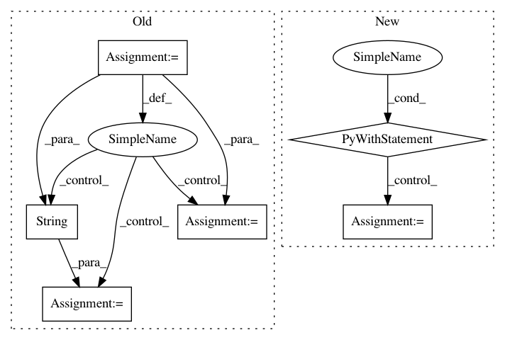

ca10c185d94470054d693f19e7691523dbe3ec55,skll/data/readers.py,NDJReader,_sub_read,#NDJReader#Any#,434
Before Change
If IDs cannot be converted to floats, and ``ids_to_floats``
is ``True``.
for example_num, line in enumerate(f):
// Remove extraneous whitespace
line = line.strip()
// If this is a comment line or a blank line, move on
if line.startswith("//") or not line:
continue
// Process good lines
example = json.loads(line)
// Convert all IDs to strings initially,
// for consistency with csv and megam formats.
curr_id = str(example.get("id",
"EXAMPLE_{}".format(example_num)))
class_name = (safe_float(example["y"],
replace_dict=self.class_map)
if "y" in example else None)
example = example["x"]
if self.ids_to_floats:
try:
curr_id = float(curr_id)
except ValueError:
raise ValueError(("You set ids_to_floats to true, but" +
" ID {} could not be converted to " +
"float").format(curr_id))
yield curr_id, class_name, example
class MegaMReader(Reader):
Reader to create a ``FeatureSet`` instance from a MegaM -fvals file.
After Change
features : list of dicts
The features for the features set.
with open(f, "r" if PY3 else "rb") as buff:
lines = [json.loads(line.strip()) for line in buff
if line.strip() and not line.startswith("//")]
// create a data frame; if it"s empty,
// then return `_parse_dataframe()`, which
// will raise an error
df = pd.DataFrame(lines)
if df.empty:
return self._parse_dataframe(df, None, None)
In pattern: SUPERPATTERN
Frequency: 3
Non-data size: 6
Instances
Project Name: EducationalTestingService/skll
Commit Name: ca10c185d94470054d693f19e7691523dbe3ec55
Time: 2019-03-05
Author: jbiggs@ets.org
File Name: skll/data/readers.py
Class Name: NDJReader
Method Name: _sub_read
Project Name: ricsinaruto/Seq2seqChatbots
Commit Name: d9748278abf04a9c74a95053fda62d0bff8b9f93
Time: 2019-02-16
Author: ricsinaruto@hotmail.com
File Name: t2t_csaky/utils/run.py
Class Name:
Method Name: experiment
Project Name: automl/auto-sklearn
Commit Name: 2bffb578491e086ffb39d2740df3c28552ff38d7
Time: 2016-05-10
Author: feurerm@informatik.uni-freiburg.de
File Name: autosklearn/evaluation/abstract_evaluator.py
Class Name: AbstractEvaluator
Method Name: _fit_and_suppress_warnings